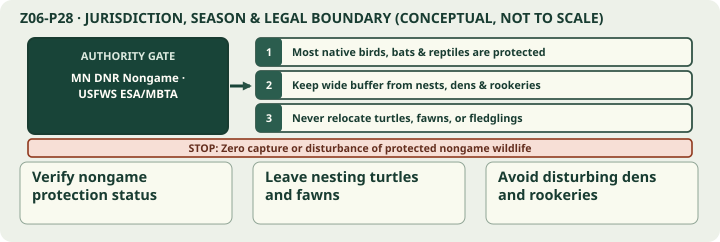

Z06-P28 · Hunting and fishing · New manuscript
Protected Nongame Wildlife, Turtles and Nesting Exclusions
Recognize legally protected nongame mammals, birds, reptiles, and amphibians that must never be harassed, collected, or harvested.
When it applies · Wetlands, shorelines, woodlands, and prairies across Minnesota.
Equipment · MN DNR Rare Species & Nongame reference.

Actions
- Recognize that most native wildlife—including songbirds, raptors, bats, flying squirrels, wood turtles, Blanding turtles, and rare amphibians—are strictly protected nongame or listed species.[H14, L04, L05]
- Leave solitary deer fawns, fledged birds, and nesting turtles undisturbed rather than assuming they are orphaned or relocating them.[L05, L06]
- Keep clear of heron rookeries, eagle nests, bat hibernacula, and turtle nesting beaches during sensitive spring and summer breeding windows.[H14, L04, L05]
Failure recognition · Collecting wild turtles, disturbing eagle nests, or taking nongame animals causes irreversible population loss and legal penalties.[H14, L04, L05]
Verify · All nongame and listed wildlife are observed quietly from a respectful distance with zero capture or disturbance.[L04, L05]
Stop or change course · Stop approaching whenever wildlife alters feeding/nesting behavior, gives alarm calls, or displays defensive posture.[L05]
Evidence and editorial notes
- H14 · U.S. Fish & Wildlife Service · Migratory Bird Treaty Act Protections (Current web edition)
- Section: Migratory Bird Treaty Act federal protections · Conditions: All native migratory birds, nests, feathers, and eggs
Support: Federal law prohibits taking, possessing, or disturbing protected migratory birds, nests, or eggs outside regulated hunting seasons and federal permits.
Limitations: Waterfowl hunting requires both state licenses and a federal Duck Stamp plus non-toxic shot rules. · Conflicting evidence: None noted.
Editorial note: Enforces federal migratory bird law. · Specialist reviewer: USFWS and wildlife legal reviewer
Primary source · checked 2026-11-25 - L04 · Minnesota DNR · Minnesota Endangered, Threatened, and Special Concern Species (Current web edition)
- Section: State endangered, threatened, and special-concern species · Conditions: Habitats supporting state-listed mammals, birds, reptiles, and amphibians
Support: Unselective devices endanger state-listed species including raptors, mustelids, and turtles.
Limitations: Verify protected-species distribution and never disturb protected habitats or dens. · Conflicting evidence: None noted.
Editorial note: Protects state-listed nongame species. · Specialist reviewer: Conservation biologist
Primary source · checked 2026-11-25 - L05 · Minnesota DNR · Nongame Wildlife Program and Protected Species (Current web edition)
- Section: Nongame wildlife protection and ecological role · Conditions: Non-harvested wildlife across forests, wetlands, and prairies
Support: Most wild mammals, songbirds, raptors, and reptiles are legally protected nongame species that may not be captured or killed.
Limitations: Ecological stewardship prioritizes observation and avoidance over capture. · Conflicting evidence: None noted.
Editorial note: Frames Z07 ecological ethics. · Specialist reviewer: Nongame wildlife biologist
Primary source · checked 2026-11-25 - L06 · Minnesota DNR · Injured, Orphaned, or Trapped Wildlife Reporting (Current web edition)
- Section: Reporting injured, orphaned, or accidentally trapped wildlife · Conditions: Discovering a trapped or injured wild animal in the field
Support: Maintain safe distance to avoid bites, rabies, and stress to the animal; note GPS/location and contact a Conservation Officer or licensed wildlife rehabilitator.
Limitations: Never attempt barehanded release of distressed carnivores, raptors, or large mammals. · Conflicting evidence: None noted.
Editorial note: Establishes Z07 incidental-capture reporting protocol. · Specialist reviewer: Wildlife rehabilitator and DNR officer
Primary source · checked 2026-11-25
Source lineage · New manuscript (Z06 P17 species protection) · Classification · New manuscript.